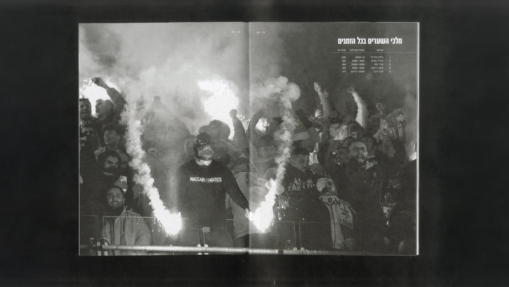
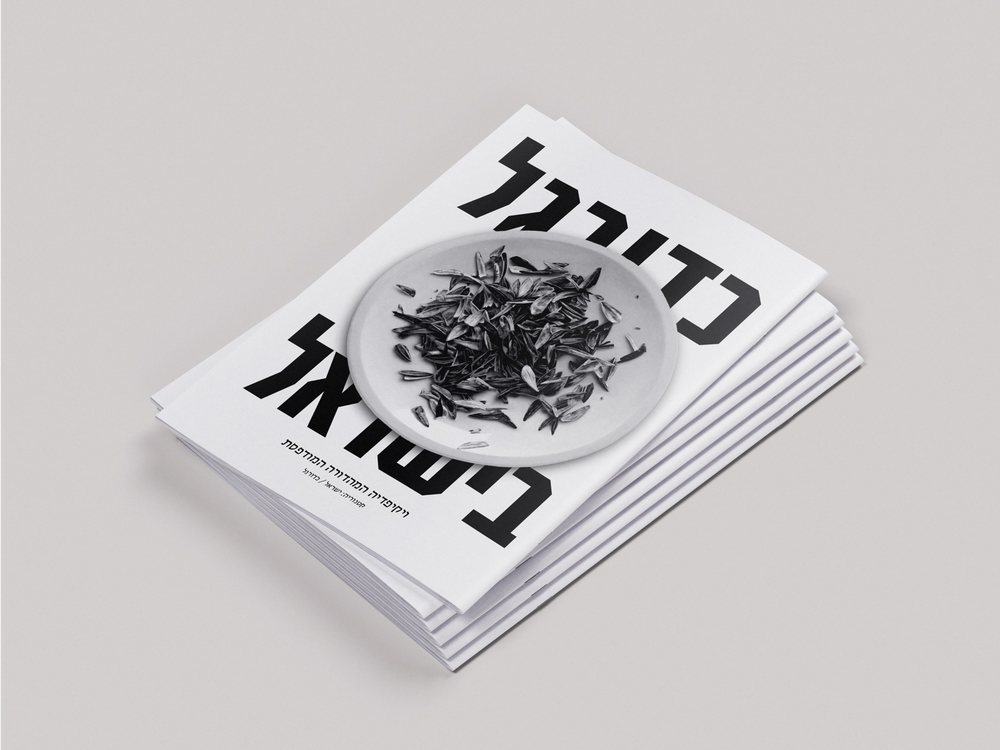
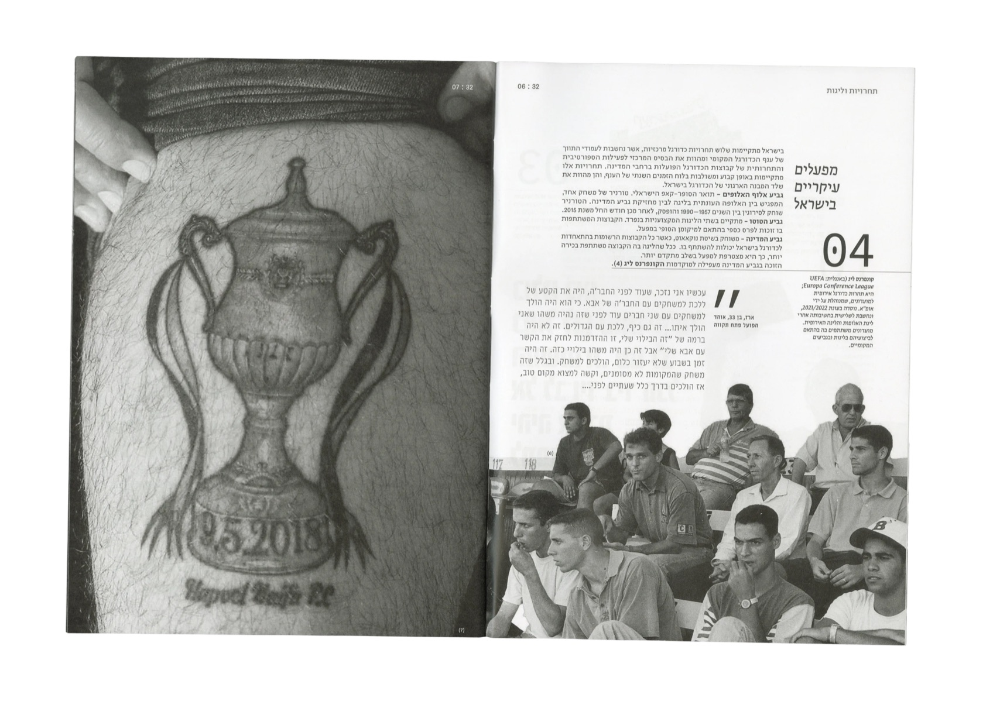
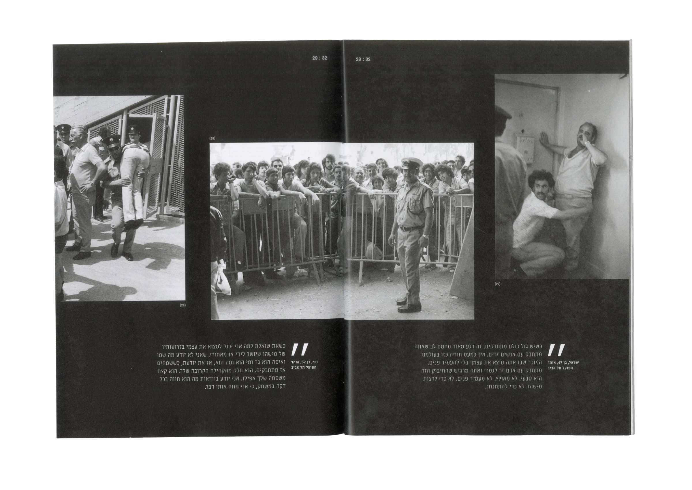
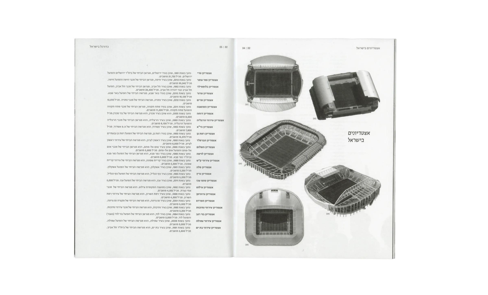
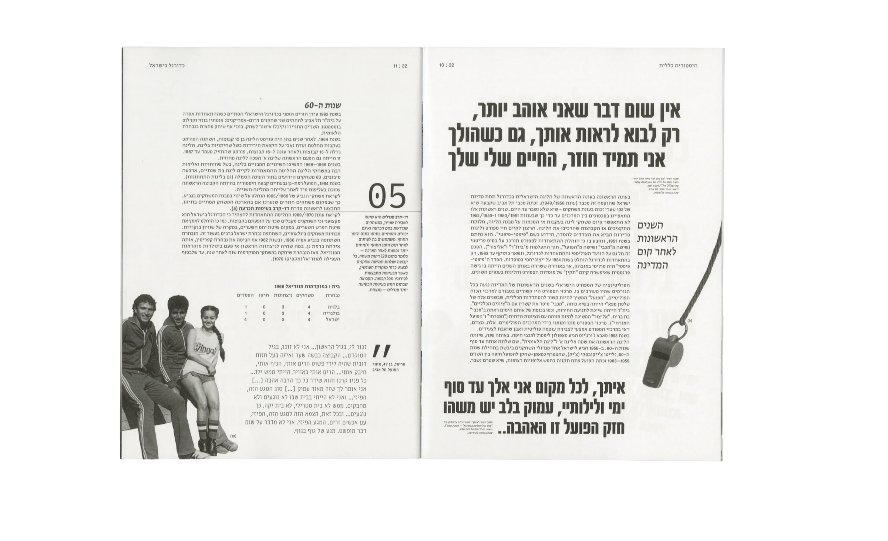
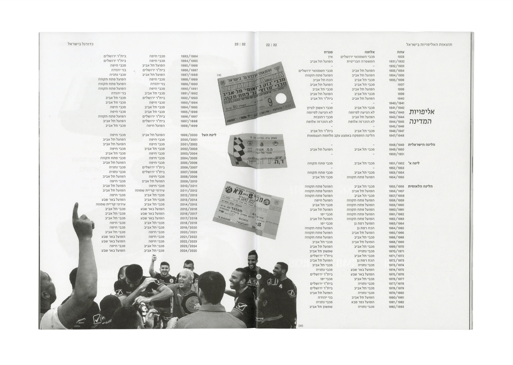
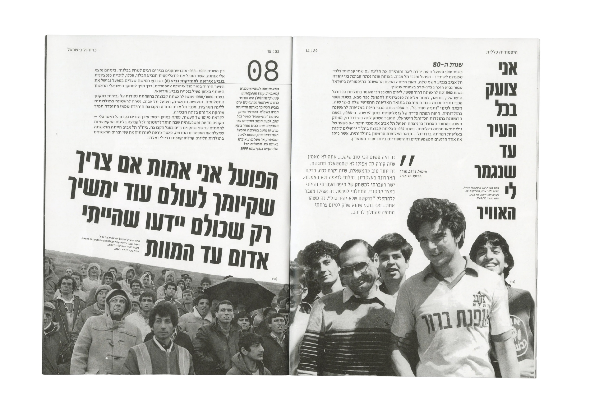

FOOTBALL
IN ISRAEL
Description
Editorial Design, Typography
2026
Academic · Bezalel
A printed edition of Wikipedia dedicated to football in Israel, bringing encyclopedic information into dialogue with fan culture. Alongside historical accounts, facts, and statistics, the publication incorporates terrace chants, personal testimonies, and archival photography. This contrast is reflected in a typographic system that shifts between structure and expressive freedom.
The typographic system was developed around the different types of content. Facts, lists, and footnotes retain their encyclopedic structure, while terrace chants and personal testimonies take on a more expressive form, shifting the hierarchy and rhythm of the publication.


As part of my research, I collected archival photographs, fan chants, and personal testimonies from published sources. I brought these materials together with the encyclopedic content to expand the perspective on football in Israel, giving space to the voices and experiences of the fans themselves.




